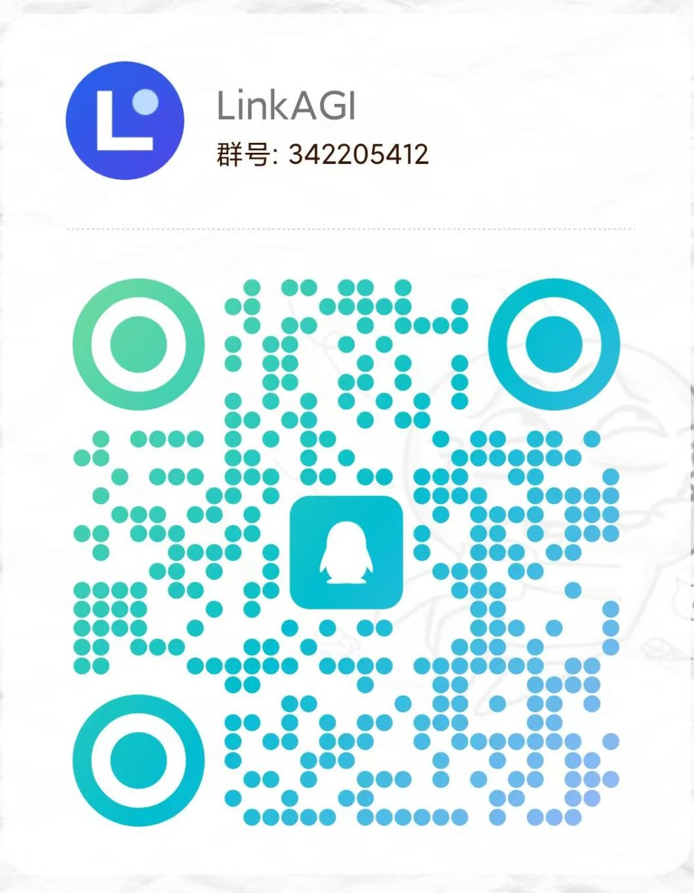

Claude · 缓存排查
缓存没命中，
先看这三个字段。
第一次创建缓存、后续读取缓存、客户端没有显示缓存，是三种不同情况。比较费用前，先在响应和使用日志里分清它们。
LinkAGI 运营方维护 · 2026-11-19 更新
01 / USAGE
写入不等于命中
Claude Messages 原生响应中，重点看以下字段：
cache_creation_input_tokens：本次新写入缓存的输入 Token。cache_read_input_tokens：本次从缓存读取的输入 Token，大于 0 才能确认本次有缓存读取。input_tokens：本次未从缓存读取、也未写入缓存的普通输入 Token。
在 Messages 原生用量口径下，总输入是这三项相加。OpenAI 兼容接口的用量结构不同，不能把同一套加法直接套到所有客户端。
客户端不显示缓存字段，不能直接判定没有缓存。先检查完整的用量统计，再对照本站使用日志中的缓存、Token 与实际扣费。
02 / COMPARE
用同一段内容做对照
- 保持模型、分组和接口不变，使用一段真实需要反复处理的固定上下文。
- 确认客户端或接口启用了该模型支持的缓存方式；固定前缀长度需要达到模型的最低缓存门槛。
- 发出第一条请求，记录缓存写入、缓存读取和扣费。已有缓存时，第一次观察也可能直接命中。
- 在缓存有效期内再发一次，保持缓存断点之前的内容一致。若要换问题，把变化放在可复用前缀之后。
- 比较两次的缓存读取量和实际扣费，输出长度也要一起看。
Anthropic 默认缓存时效为 5 分钟，另有 1 小时选项；具体线路是否支持、如何计价，以所用接口和模型为准。一次短请求足以检查连通性，通常不足以验证长前缀缓存。
缓存读取成功不代表整次任务必然更便宜。输出长度、缓存写入和所选分组价格都会影响最终费用。
03 / CHECK
常见的未命中原因
- 前缀变了：系统提示词、工具定义、图片或上下文顺序变化，都可能改变缓存对应的内容。把时间戳、随机 ID 等动态内容放进固定前缀，也会影响复用。
- 长度不足或已经过期：最低长度取决于具体模型。两次请求间隔过长，或上一次长输出耗掉大部分有效期，也可能需要重新写入。
- 模型或上游切换：不要假定不同模型、分组、供应方或账号之间共享缓存。
- 接口转换没有保留缓存设置：客户端发出的
cache_control是否送到支持它的上游，需要结合接口链路判断。 - 用量回传不完整：响应或客户端缺少字段时，先确认日志与协议转换，不能把缺失字段当作已证实的零命中。
缓存针对输入前缀复用，不是直接返回上一次的回答。同一个问题，后续仍然可能产生新的输出。
04 / LINKAGI
这次具体修了什么
05 / SUPPORT
仍有问题，带这几项来
客户端名称、完整模型名、分组、发生时间、请求 ID，以及脱敏后的缓存用量字段。这些信息能帮助定位是客户端显示、接口转换还是上游缓存问题。
请勿公开 API Key、个人资料或完整私密对话。可以通过官网「关于」里的客服入口反馈。
缓存机制参考：Anthropic Prompt caching 文档。本文的 LinkAGI 修复说明来自本站发布记录；别名模型与分组能力以本站实际配置为准。
